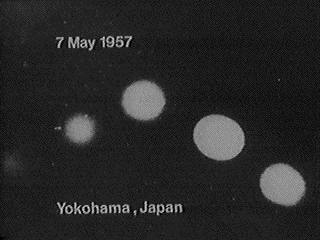

À la base aérienne d'Edwards (Californie), James D. Bittick et John R. Gettys, Jr., des opérateurs de
photothéodolite civils, roulent en camion vers le site d'Askania n° 4 lorsqu'ils observent un phénomène au-dessus d'eux à une distance qu'ils
estiment à 500 yards. Ils le signalent par radio à leur superviseur Frank Baker qui leur
dit de mettre en place la caméra et essayer de le filmer, ce qu'ils font au bout de . Ils
photographient ce qu'ils décriront comme un objet doré et lumineux avec un dôme, en forme de soucoupe, avec des
trous ou ouvertures autour du dôme de 100 pieds de diamètre environ à environ 1 mile au loin au nord, dirigé vers
l'est (les photos montrent des objets multiples?). Les images au photothéodolite disponibles n° 614, 620 et 651 (609
trop flou, coupé) montrent un azimut de 10°28', une élévation de 2°24' se décalant à l'Est à l'azimut 40°30' et une
élévation 1°0'. Disparu à 5 miles environ. Interception par chasseur à réaction possible. Observation de
, taille de 8 pleines lunes ? photo-theodolite L'explication d'un ballon météo avec dégonflement lent a été contestée par le Colonel Klein (sp?) de la base d'Edward, analysant la trajectoire effective du ballon et la direction du ventTulien, Thomas:Jan AldrichMcDonald 1968 pp. 75, 85Gross, Loren: Mar-May 1957 pp. 67-68;
IUR Oct 2005.
Cooper, Leroy Gordon: LDLN 358.
[04:00 PDT?] Sur la côte californienne, le copilote USAF d'un appareil de patrouille
radar avec la 552ᵉ Escadrille AEW&C voit une lumière rouge jaunâtre à 10 000 pieds passer devant son appareil.
L'observation a duré 30 s Weinstein, D.Index du FUFOR.
Photographie à Yokohama (Japon) le 7

A Yokohama (Japon), photographie (ci-contre).
A Beaucourt-sur-l'Ancre (Somme), 3 petits êtres à proximité
d'un engin. La veille et l'avant-veille, des habitants auraient remarqué les allées et venues dans la campagne
environnante d'une 2 CV grise pilotée par un homme élégant, vêtu d’un costume pied de poule, et inconnu au pays. Ce
dernier aurait abandonné le véhicule devant une gare de la région Couten, François < Macé, Christian : "Les rendez-vous Ovni-Voiture" in "Les extra-terrestres qui sont parmi nous", UFOWeb.
A Moab (Utah), un ovni bleu-vert rond observé passant sous
l'altitude de l'observateur UFO Evidence, NICAP, IV.
Inauguration du cosmodrome de Baïkonour.
Le décret ordonnant la création du lanceur russe R7 est signé.
A Saint-André-Treize-Voies (Vendée, à côté de Montaigu), un
homme (ouvrier des abattoirs de La Roche-sur-Yon, 33 ans) voit dans un champ de régras
(ou de trèfle) un objet circulaire blanc lumineux posé sur le sol qui se met à décoller à la verticale vers le ciel,
faisant un bruit comme un aspirateur, en s'éteignant comme une lumière petit à petit. Le lendemain matin, l'homme
retournera sur place, constant que l'herbe est légèrement couchée. Il va le signaler à la mairie de la commune.
Gallais: "En Vendée", LDLN n° 168, 1976, p. 6.
A Houma (Louisiane), observation de 14 mn Liste de McDonald.
A Detroit (Michigan), observation de 30 s Liste de McDonald.
Dans le Kent (Royaume-Uni), un avion de ligne de cat. 3 connaît une
défaillance radio pendant une observation d'ovni. Les fonctions normales reviennent une fois l'ovni parti "1957 UFO Wave Sightings", NICAP.